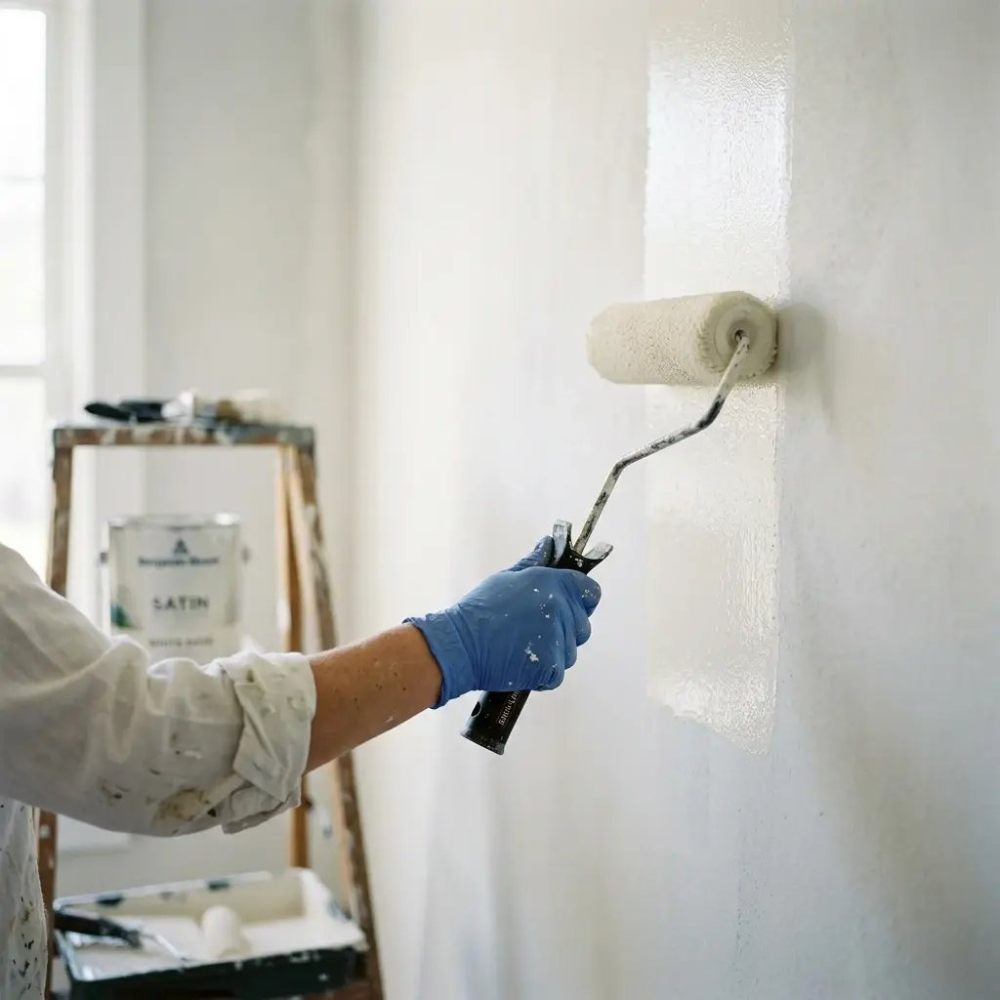
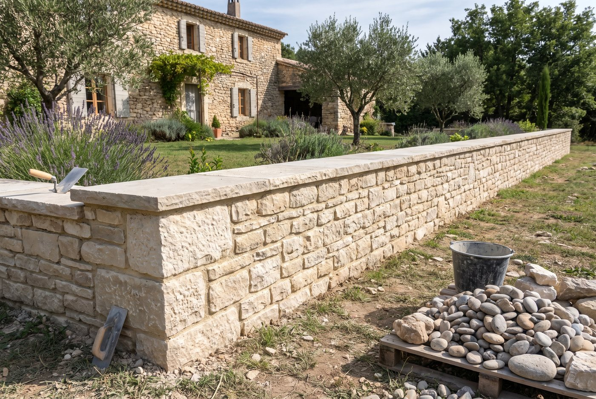
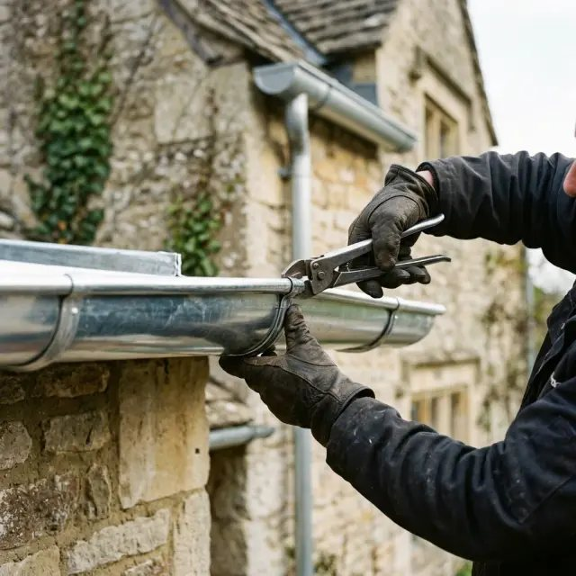
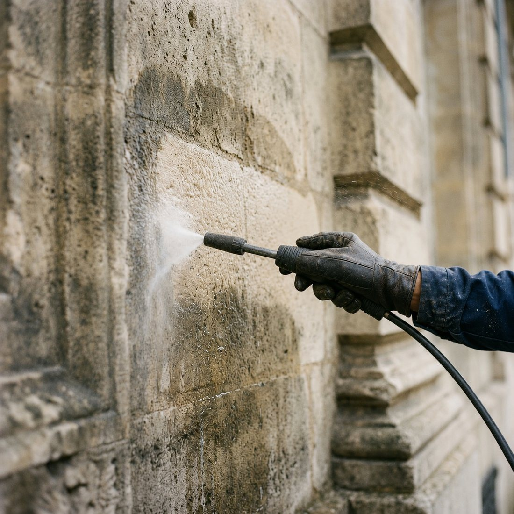

Une fenêtre, une porte ou une baie vitrée dans un mur en pierre de 60 cm : étaiement, linteau et jambages, sans fragiliser la maison.
Ouvrir un mur porteur en pierre ne s'improvise pas. Il faut reprendre les charges au-dessus de la future ouverture, étayer le temps des travaux, poser un linteau dimensionné puis reconstituer des jambages qui tiennent la maçonnerie. Mal fait, le mur fissure au-dessus de l'ouverture, parfois des années plus tard.
Daouary Rénovation Construction réalise ces ouvertures sur maçonnerie ancienne à Vallon-Pont-d'Arc et dans tout le sud de l'Ardèche : baies vitrées, portes-fenêtres, fenêtres de façade ou percements de dépendances. Linteau béton, bois ou pierre selon l'aspect recherché, jambages en pierre de taille et appuis taillés pour s'accorder au bâti existant.

Nous venons sur place évaluer les travaux, prendre les mesures et répondre à vos questions.
Un devis clair poste par poste, avec les matériaux, la durée du chantier et un prix ferme.
Protection des abords, préparation puis réalisation soignée des travaux.
Contrôle avec vous, reprises éventuelles et nettoyage complet du chantier.
Nous intervenons pour ce type de travaux dans les communes suivantes : Vallon-Pont-d'Arc, Aubenas, Salavas, Lagorce, Labeaume, Les Vans, Pradons, Saint-Remèze, Vogüé, Joyeuse, Largentière, Ruoms, Barjac, Bourg-Saint-Andéol, Saint-Martin-d'Ardèche et Villeneuve-de-Berg. Votre commune n'apparaît pas dans la liste ? Appelez-nous, nous vous dirons rapidement si nous intervenons chez vous.
Presque toujours, à condition de reprendre correctement les charges. Nous vérifions d'abord l'épaisseur, la nature du mur et ce qu'il porte, puis nous dimensionnons le linteau.
Oui : créer ou modifier une ouverture en façade demande une déclaration préalable en mairie, et l'avis des Bâtiments de France en secteur protégé. Nous vous aidons à monter le dossier.
Comptez en général quelques jours pour l'étaiement, le percement, le linteau et les jambages, hors pose de la menuiserie et finitions.

Murs de clôture, murets, murs de soutènement et restauration de murs anciens en pierre du pays, montés à la chaux ou à pierre sèche.
En savoir plus
Dalles, planchers et chapes en béton armé en rénovation : reprise de niveaux, hérisson, isolation et ferraillage dans le bâti ancien.
En savoir plus
Isolation par l'extérieur en panneaux de toiture Trilatte pendant la réfection, et isolation soufflée des combles perdus.
En savoir plusDaouary Rénovation Construction se déplace gratuitement pour évaluer vos travaux et vous remettre un devis clair, sans engagement.